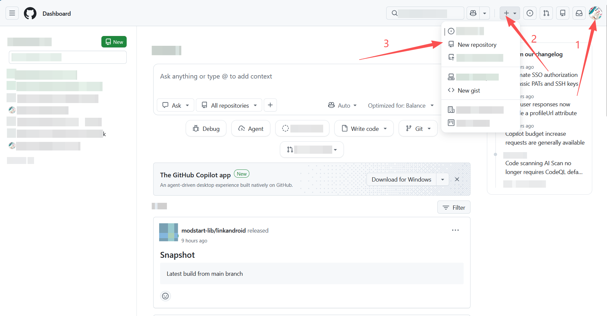
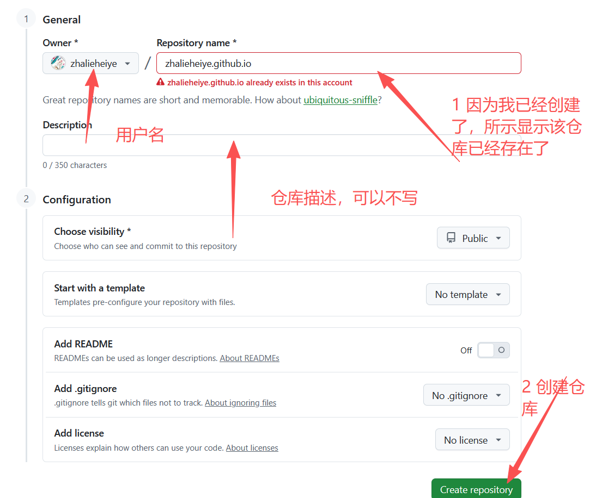
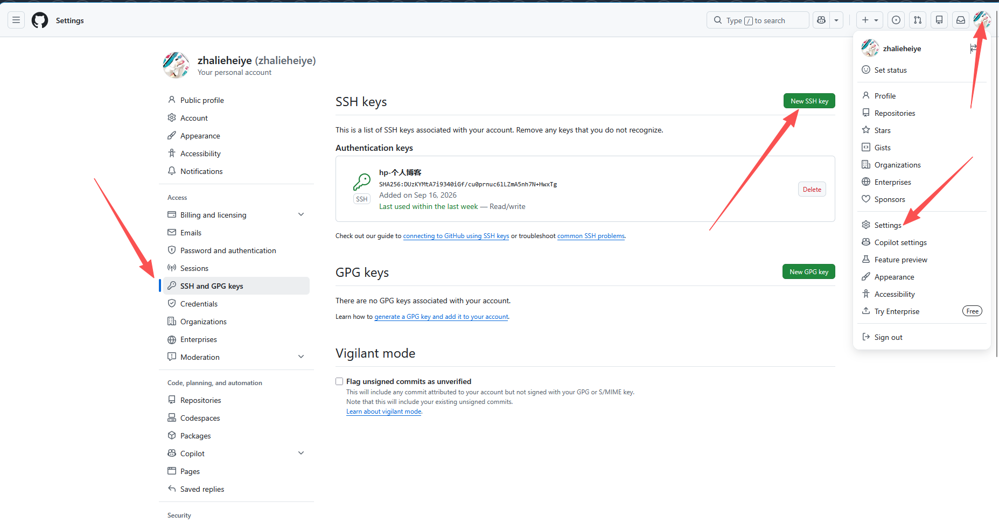

这是我的第一篇博文，希望后面会坚持记录下去（希望吧）
这篇先简单讲解下怎么基于hugo 和 github pages进行博客的搭建
简单说明下两者分别负责什么
- hugo 简单来说是一个工具，它提供了一些命令和框架，依据其设置的规制，进行md文档的撰写，就能将md文档转化成静态的网页文件
- github pages 就是负责将这些网页文件进行在线托管的一个平台，使得上文生成的静态网页文件可以被公网所访问
接着，先讲解下hugo的安装与配置
-
官方中文文档
-
安装：
- 官方安装教程
- 后续待填坑
-
快速上手
-
大体分为如下操作
-
创建项目架构
hugo new site <项目名> # <> 不需要输入 -
进入项目内部
cd ./<项目名>初始化项目 -
初始化项目
git init将 Ananke 主题克隆到
themes目录中，并将其作为 Git 子模块 添加到您的项目中。(待说明)git submodule add https://github.com/theNewDynamic/gohugo-theme-ananke.git themes/ananke # 命令讲解 git submodule add <你想要添加的主题，可以在hugo官网浏览> <本地主题文件夹> -
将主题添加到项目内
echo "theme = 'ananke'" >> hugo.toml # 此方法有概率出问题 # 建议直接打开hugo.toml文件，在末尾追加一行 # theme = 'ananke' # 如果有 theme 了，就把原先的覆盖掉，不要有两个相同的字段名，否则会报错 # 如果安装的是其他的主题，则需要阅读对应的主题配置说明 -
启动服务并在本地浏览展示效果
hugo server# 应该输出类似的结果 ... Start building sites … hugo v0.166.0-78400b4de8adc99273d3e674ed6c4d14c3bdf669+extended windows/amd64 BuildDate=2026-09-09T14:45:02Z VendorInfo=gohugoio WARN found no layout file for "html" for kind "section": You should create a template file which matches Hugo Layouts Lookup Rules for this combination. │ EN ──────────────────┼───── Pages │ 11 Paginator pages │ 0 Non-page files │ 0 Static files │ 192 Processed images │ 0 Aliases │ 1 Cleaned │ 0 Built in 258 ms Environment: "development" Serving pages from disk Running in Fast Render Mode. For full rebuilds on change: hugo server --disableFastRender Web Server is available at http://localhost:1313/ (bind address 127.0.0.1) Press Ctrl+C to stop # 这里 http://localhost:1313/ 就是本地预览的地址，可以预览网页效果 # 此时并未创建文章，所以应该是一个没有贴文内容的，且具有样式的网页 -
创建贴文
hugo new content/post/<贴文标题>.md此时，会在项目内的 content/post 文件夹下创建一个md文件，查看md文件的开头，应该是类似的结构
+++ date = '2026-09-15T22:43:21+08:00' draft = true title = '贴文标题' +++默认贴文的draft属性值为true，不是的话也不影响，可以设置模板进行覆盖（待填坑）
需要单独讲解的是，draft = true，表示该贴文处于草稿阶段，如果想要本地预览时，可以看见该贴文生成的网页，可以有两种方法：
- 将 true 改为 false，表示该贴文已经编辑成功，可以正式发布，之后会将该帖文加入静态网页的构建中（一般来说，只有当贴文确定要发布了，才会修改该属性）
- 使用 hugo server 命令就可以本地浏览该贴文构建的网页
- 使用 hugo server –buildDrafts
- 表示本地预览时，构建处于草稿阶段的贴文
- 将 true 改为 false，表示该贴文已经编辑成功，可以正式发布，之后会将该帖文加入静态网页的构建中（一般来说，只有当贴文确定要发布了，才会修改该属性）
-
确认无疑后，就将贴文的 draft = true 改为 draft = false，之后利用 hugo 指令，生成静态文件夹（在项目根目录下，有一个public文件夹，这个就是生成的静态网页文件夹）
-
-
此时，我们的网站文件就生成成功了，接下来需要完成部署在github pages的操作
-
注册github账号
-
创建一个仓库，注意，仓库名需要特别注意，仓库名需要满足如下条件：
<账号名>.github.io具体操作步骤如图所示


- 根据创建后的仓库提示，进行仓库的初始化操作
- 生成密钥对，将公钥上传至github

- 依次输入公钥标识和公钥内容即可，具体公钥生成教程亲自行网上查询
此时，先将GitHub放在一边
回到hugo创建的项目内，在项目根目录中找到 hugo.toml，编辑baseURL字段，将其替换成自己对应的链接（就是将zhalieheiye替换成自己的账户名）
baseURL = "https://zhalieheiye.github.io/"
进入public文件夹，执行
git add .
git commit -m "提交信息"
git push
此时网页就被推送至github pages，等待少许时间就能通过 baseURL对应的网站链接在线看见文章了
易错点
- 仓库名开头必须是账户名
- 需要进入public文件夹之后执行推送至仓库的命令，如果需要将项目推送至仓库，请看后续教程（待填坑）